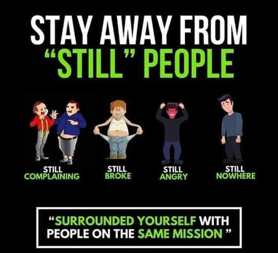
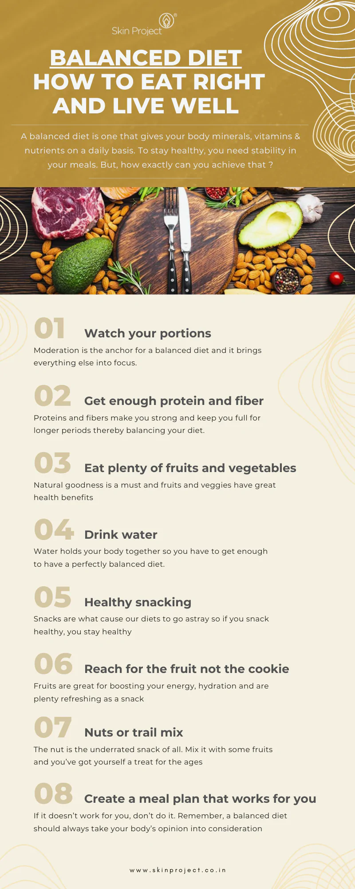

hey!! Myself Mohini
I personally believe that we should Stay Away From Still People
1.STILL COMPLAINING:
2.STILL HATING
3.STILL BROKE
4.STILL NOWHERE
Stressors are ever present in our lives.In order to achieve more and be more productive we need to get rid of these still people.They still do these things despite knowing better and get stuck in every little thing.
2.STILL HATING
3.STILL BROKE
4.STILL NOWHERE
Stressors are ever present in our lives.In order to achieve more and be more productive we need to get rid of these still people.They still do these things despite knowing better and get stuck in every little thing.

Hello My name is Mohini Chauhan
BALANCED DIET:How to Eat Right and Live Well
A balanced diet is one which gives our body minerals,vitamins and nutirents on
the daily basis.To stay healty you need stability in your meals.But how exactly can u
achieve that:
1.Watch your protiens: Moderation is the anchor for the balanced diet and it brings everything else into focus.
2.Get Enough Protien and Fiber Protien and fibre keep you strong and keep you full for longer duration.
3.Eat plenty fruits and vegetables Natural goodness is a must and fruits and veggies have great health benifits.
4.Drink Water Water holds your body together so you have to get enough to have a perfectlty balanced diet.
5.Reach for the fruit not cookie Fruits are great for boosting your energy,hydration and plenty refreshing as a snack.
1.Watch your protiens: Moderation is the anchor for the balanced diet and it brings everything else into focus.
2.Get Enough Protien and Fiber Protien and fibre keep you strong and keep you full for longer duration.
3.Eat plenty fruits and vegetables Natural goodness is a must and fruits and veggies have great health benifits.
4.Drink Water Water holds your body together so you have to get enough to have a perfectlty balanced diet.
5.Reach for the fruit not cookie Fruits are great for boosting your energy,hydration and plenty refreshing as a snack.

Hola This is Mohini
EXCELLENT MASK FOR HAIR FALL
Take fresh aloevra gel 3Tbsp and add 1 egg,1 Tbsp of coconut oil
to it and mix it together and apply on your scalp for 30min-1hr.Wash it with Mild shampoo.
Use this mask once in a week for good results.This mask controls your Hairfall instantly.
It strengthen your hair roots and maintain its Ph level it control seasonal hair fall also.
This mask is Legit in weight so that it penerates deeply in scalp and provide nourishment to hair
follicles.
So try it and share your feedback with me .